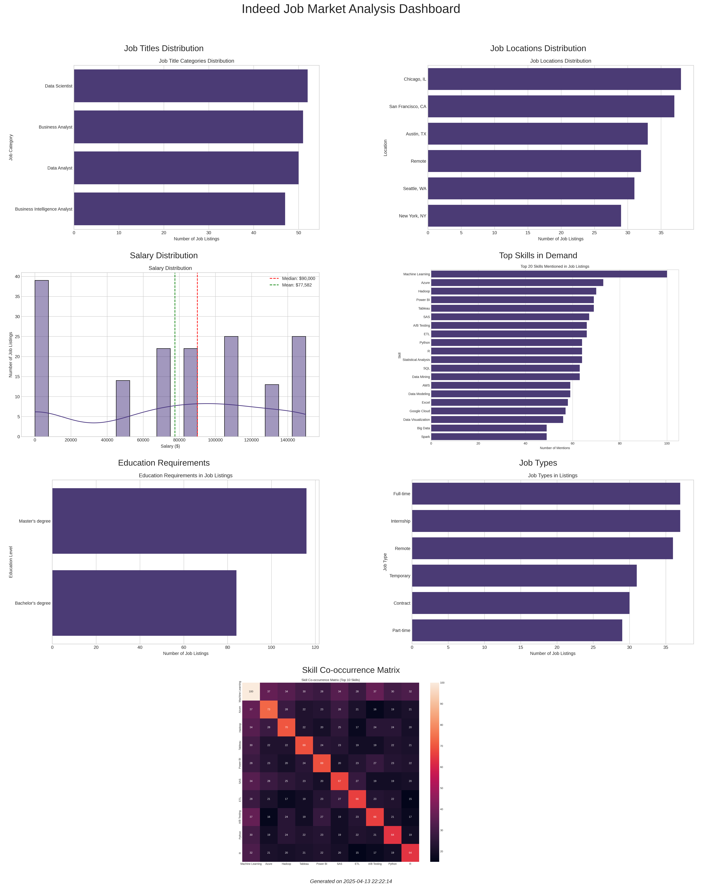
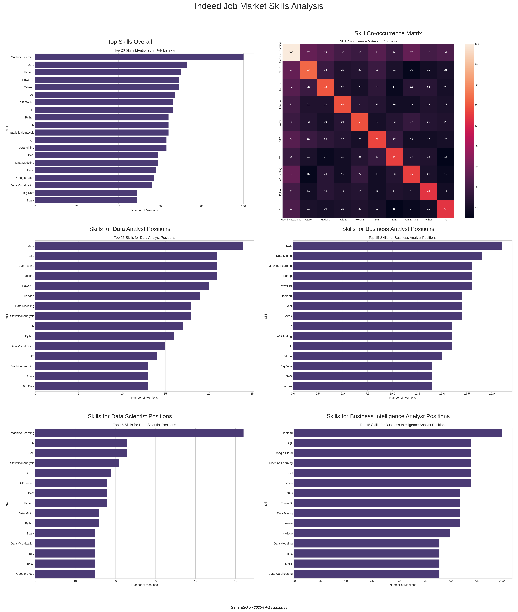
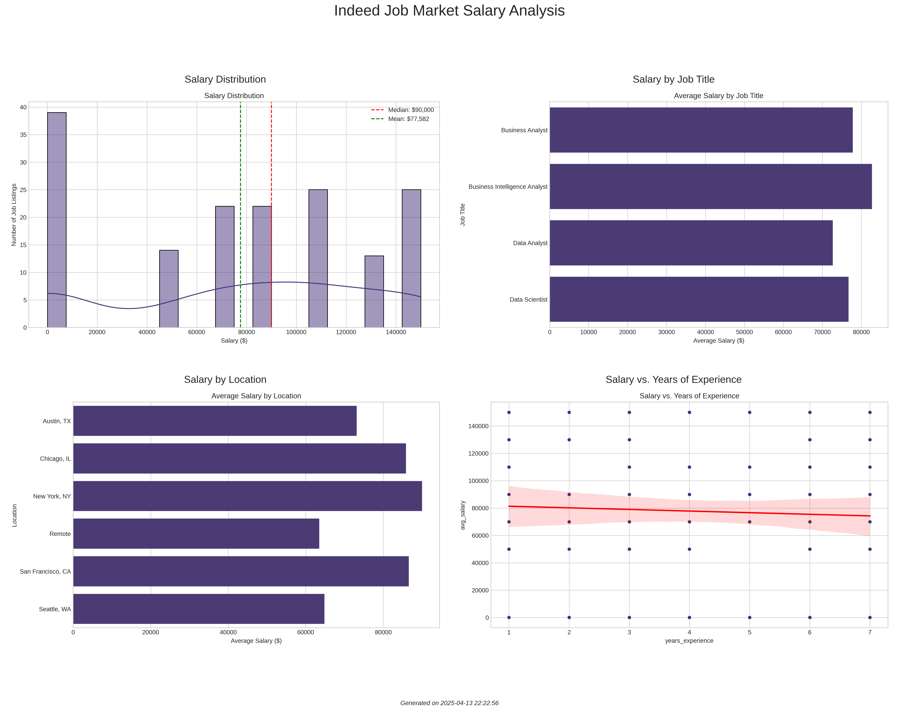

Indeed Job Market Analysis Dashboard
Key Insights
- Job Distribution: Data Scientist (26%), Business Analyst (25.5%), Data Analyst (25%), Business Intelligence Analyst (23.5%)
- Top Locations: Chicago, San Francisco, Austin, Remote, Seattle, New York
- Salary: Average $77,581.50, Median $90,000.00
- Top Skills: Machine Learning, Azure, Hadoop, Power BI, Tableau
- Education: Master's degree (58%), Bachelor's degree (42%)
Overview Dashboard

Skills Analysis

Salary Analysis
